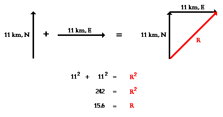
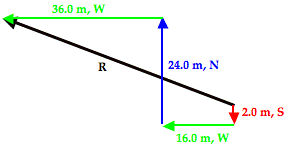
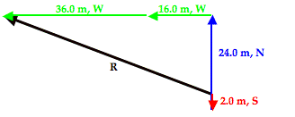
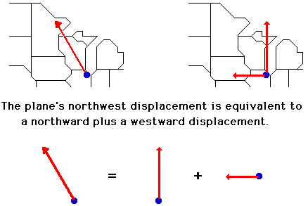
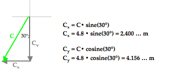
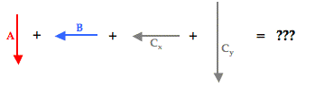
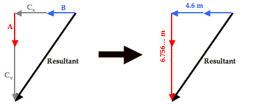
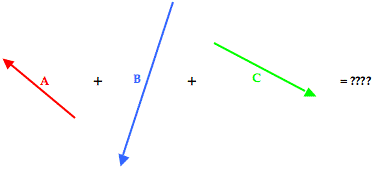
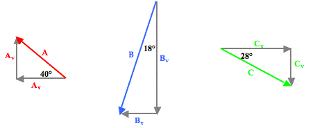

Panel
Vectors - Motion and Forces in Two Dimensions >> Lesson 1 - Vectors: Fundamentals and Operations
1.6 Component Addition
Earlier in this lesson, we learned that vectors oriented at right angles to one another can be added together using the Pythagorean theorem. For instance, two displacement vectors with magnitude and direction of 11 km, North and 11 km, East can be added together to produce a resultant vector that is directed both north and east. When the two vectors are added head-to-tail as shown below, the resultant is the hypotenuse of a right triangle. The sides of the right triangle have lengths of 11 km and 11 km. The resultant can be determined using the Pythagorean theorem; it has a magnitude of 15.6 km. The solution is shown below the diagram.
This Pythagorean approach is a useful approach for adding any two vectors that are directed at right angles to one another. A right triangle has two sides plus a hypotenuse; so the Pythagorean theorem is perfect for adding two right angle vectors. But there are limits to the usefulness of the Pythagorean theorem in solving vector addition problems. For instance, the addition of three or four vectors does not lead to the formation of a right triangle with two sides and a hypotenuse. So at first glance it may seem that it is impossible to use the Pythagorean theorem to determine the resultant for the addition of three or four vectors. Furthermore, the Pythagorean theorem works when the two added vectors are at right angles to one another - such as for adding a north vector and an east vector. But what can one do if the two vectors that are being added are not at right angles to one another? Is there a means of using mathematics to reliably determine the resultant for such vector addition situations? Or is the student of physics left to determining such resultants using a scaled vector diagram? Here on this page, we will learn how to approach more complex vector addition situations by combining the concept of vector components (discussed earlier) and the principles of vector resolution (discussed earlier) with the use of the Pythagorean theorem (discussed earlier).
Addition of Three or More Right Angle Vectors
As our first example, consider the following vector addition problem:
Example 1:
A student drives his car 6.0 km, North before making a right hand turn and driving 6.0 km to the East. Finally, the student makes a left hand turn and travels another 2.0 km to the north. What is the magnitude of the overall displacement of the student?
Like any problem in physics, a successful solution begins with the development of a mental picture of the situation. The construction of a diagram like that below often proves useful in the visualization process.

When these three vectors are added together in head-to-tail fashion, the resultant is a vector that extends from the tail of the first vector (6.0 km, North, shown in red) to the arrowhead of the third vector (2.0 km, North, shown in green). The head-to-tail vector addition diagram is shown below.

As can be seen in the diagram, the resultant vector (drawn in black) is not the hypotenuse of any right triangle - at least not of any immediately obvious right triangle. But would it be possible to force this resultant vector to be the hypotenuse of a right triangle? The answer is Yes! To do so, the order in which the three vectors are added must be changed. The vectors above were drawn in the order in which they were driven. The student drove north, then east, and then north again. But if the three vectors are added in the order 6.0 km, N + 2.0 km, N + 6.0 km, E, then the diagram will look like this:

After rearranging the order in which the three vectors are added, the resultant vector is now the hypotenuse of a right triangle. The lengths of the perpendicular sides of the right triangle are 8.0 m, North (6.0 km + 2.0 km) and 6.0 km, East. The magnitude of the resultant vector (R) can be determined using the Pythagorean theorem.
R2 = (8.0 km)2 + (6.0 km)2
R2 = 64.0 km2+ 36.0 km2
R2 = 100.0 km2
R = SQRT (100.0 km2)
R = 10.0 km
(SQRT indicates square root)
In the first vector addition diagram above, the three vectors were added in the order in which they are driven. In the second vector addition diagram (immediately above), the order in which the vectors were added was switched around. The size of the resultant was not affected by this change in order. This illustrates an important point about adding vectors: the resultant is independent by the order in which they are added. Adding vectors A + B + C gives the same resultant as adding vectors B + A + C or even C + B + A. As long as all three vectors are included with their specified magnitude and direction, the resultant will be the same. This property of vectors is the key to the strategy used in the determination of the answer to the above example problem. To further illustrate the strategy, let's consider the vector addition situation described in Example 2 below.
Example 2:
Mac and Tosh are doing the Vector Walk Lab. Starting at the door of their physics classroom, they walk 2.0 meters, south. They make a right hand turn and walk 16.0 meters, west. They turn right again and walk 24.0 meters, north. They then turn left and walk 36.0 meters, west. What is the magnitude of their overall displacement?
A graphical representation of the given problem will help visualize what is happening. The diagram below depicts such a representation.

When these four vectors are added together in head-to-tail fashion, the resultant is a vector that extends from the tail of the first vector (2.0 m, South, shown in red) to the arrowhead of the fourth vector (36.0 m, West, shown in green). The head-to-tail vector addition diagram is shown below.
The resultant vector (drawn in black and labeled R) in the vector addition diagram above is not the hypotenuse of any immediately obvious right trangle. But by changing the order of addition of these four vectors, one can force this resultant vector to be the hypotenuse of a right triangle. For instance, by adding the vectors in the order of 2.0 m, S + 24.0 m, N + 16.0 m, W + 36.0 m. W, the resultant becomes the hypotenuse of a right triangle. This is shown in the vector addition diagram below.
With the vectors rearranged, the resultant is now the hypotenuse of a right triangle that has two perpendicular sides with lengths of 22.0 m, North and 52.0 m, West. The 22.0 m, North side is the result of 2.0 m, South and 24.0 m, North added together. The 52.0 m, West side is the result of 16.0 m, West and 36.0 m, West added together. The magnitude of the resultant vector (R) can be determined using the Pythagorean theorem.
R2 = (22.0 m)2 + (52.0 m)2
R2 = 484.0 m2 + 2704.0 m2
R2 = 3188.0 m2
R = SQRT (3188.0 m2)
R = 56.5 m
(SQRT indicates square root)
As can be seen in these two examples, the resultant of the addition of three or more right angle vectors can be easily determined using the Pythagorean theorem. Doing so involves the adding of the vectors in a different order.
SOH CAH TOA and the Direction of Vectors
The above discussion explains the method for determining the magnitude of the resultant for three or more perpendicular vectors. The topic of direction has been ignored in the discussion. Now we will turn our attention to the method for determining the direction of the resultant vector. As a quick review, recall that earlier in this lesson a convention for expressing the direction of a vector was introduced. The convention is known as the counter-clockwise from east convention, often abbreviated as the CCW convention. Using this convention, the direction of a vector is often expressed as a counter-clockwise angle of rotation of the vector about its tail from due East.

To begin our discussion, let's return to Example 1 above where we made an effort to add three vectors: 6.0 km, N + 6.0 km, E + 2.0 km, N. In the solution, the order of addition of the three vectors was rearranged so that a right triangle was formed with the resultant being the hypotenuse of the triangle. The triangle is redrawn at the right. Observe that the angle in the lower left of the triangle has been labeled as theta (Θ). Theta (Θ) represents the angle that the vector makes with the north axis. Theta (Θ) can be calculated using one of the three trigonometric functions introduced earlier in this lesson - sine, cosine or tangent. The mnemonic SOH CAH TOA is a helpful way of remembering which function to use. In this problem, we wish to determine the angle measure of theta (Θ) and we know the length of the side opposite theta (Θ) - 6.0 km - and the length of the side adjacent the angle theta (Θ) - 8.0 km. The TOA of SOH CAH TOA indicates that the tangent of any angle is the ratio of the lengths of the side opposite to the side adjacent that angle. Thus, the tangent function will be used to calculate the angle measure of theta (Θ). The work is shown below.
Tangent(Θ) = Opposite/Adjacent
Tangent(Θ) = 6.0/8.0
Tangent(Θ) = 0.75
Θ = tan-1 (0.75)
Θ = 36.869...°
Θ =37°
The problem is not over once the value of theta (Θ) has been calculated. This angle measure must now be used to state the direction. One means of doing so is to simply state that the direction of the resultant is 37° east of north. Alternatively, the counter-clockwise convention could be used. Since the angle that the resultant makes with east is the complement of the angle that it makes with north, we could express the direction as 53° CCW.
We will now consider Example 2 as a second example of how to use SOH CAH TOA to determine the direction of a resultant. In Example 2, we were trying to determine the magnitude of 2.0 m. S + 16.0 m, W + 24.0 m, N + 36.0 m, W. The solution involved re-ordering the addition so that the resultant was the hypotenuse of a right triangle with known sides. The right triangle is shown below. The resultant is drawn in black. Once more, observe that the angle in the lower right of the triangle has been labeled as theta (Θ). Theta (Θ) represents the angle that the vector makes with the north axis.
Theta (Θ) can be calculated using the tangent function. In this problem, we wish to determine the angle measure of theta (Θ) and we know the length of the side opposite theta (Θ) - 52.0 m - and the length of the side adjacent the angle theta (Θ) - 22.0 m. The TOA of SOH CAH TOA indicates that the tangent of any angle is the ratio of the lengths of the side opposite to the side adjacent that angle. Thus, the tangent function will be used to calculate the angle measure of theta (Θ). The work is shown below.
Tangent(Θ) = Opposite/Adjacent
Tangent(Θ) = 52.0/22.0
Tangent(Θ) = 2.3636 …
Θ = tan-1 (2.3636 …)
Θ = 67.067 …°
Θ =67.1°
The problem is not over once the value of theta (Θ) has been calculated. This angle measure must now be used to state the direction. One means of doing so is to simply state that the direction of the resultant is 67.1° west of north. Alternatively, the counter-clockwise convention could be used. The north axis is rotated 90° counter-clockwise from east and this vector is an additional 67.1° counter-clockwise past north. Thus the CCW direction is 157.1° CCW.
In summary, the direction of a vector can be determined in the same way that it is always determined - by finding the angle of rotation counter-clockwise from due east. Since the resultant is the hypotenuse of a right triangle, this can be accomplished by first finding an angle that the resultant makes with one of the nearby axes of the triangle. Once done, a little thinking is required in order to relate the angle to a direction.
Addition of Non-Perpendicular Vectors
Now we will consider situations in which the two (or more) vectors that are being added are not at right angles to each other. The Pythagorean theorem is not applicable to such situations since it applies only to right triangles. Two non-perpendicular vectors will not form a right triangle. Yet it is possible to force two (or more) non-perpendicular vectors to be transformed into other vectors that do form a right triangle. The trick involves the concept of a vector component and the process of vector resolution.
A vector component describes the effect of a vector in a given direction. Any angled vector has two components; one is directed horizontally and the other is directed vertically. For instance, a northwest vector has a northward component and a westward component. Together, the effect these two components are equal to the overall effect of the angled vector. As an example, consider a plane that flies northwest from Chicago O'Hare airport towards the Canada border. The northwest displacement vector of the plane has two components - a northward component and a westward component. When added together, these two components are equal to the overall northwest displacement. This is shown in the diagram below.
The northwest vector has north and west components that are represented as Ax and Ay. It can be said that
A = Ax + Ay
So whenever we think of a northwest vector, we can think instead of two vectors - a north and a west vector. The two components Ax + Ay can be substituted in for the single vector A in the problem.
Now suppose that your task involves adding two non-perpendicular vectors together. We will call the vectors A and B. Vector A is a nasty angled vector that is neither horizontal nor vertical. And vector B is a nice, polite vector directed horizontally. The situation is shown below.
Of course nasty vector A has two components - Ax and Ay. These two components together are equal to vector A. That is, A = Ax + Ay .

And since this is true, it makes since to say that A + B = Ax + Ay + B.

And so the problem of A + B has been transformed into a problem in which all vectors are at right angles to each other. Nasty has been replaced by nice and that should make any physics student happy. With all vectors being at right angles to one another, their addition leads to a resultant that is at the hypotenuse of a right triangle. The Pythagorean theorem can then be used to determine the magnitude of the resultant.

To see how this process works with an actual vector addition problem, consider Example 3 shown below.
Example 3:Max plays middle linebacker for South's football team. During one play in last Friday night's game against New Greer Academy, he made the following movements after the ball was snapped on third down. First, he back-pedaled in the southern direction for 2.6 meters. He then shuffled to his left (west) for a distance of 2.2 meters. Finally, he made a half-turn and ran downfield a distance of 4.8 meters in a direction of 240° counter-clockwise from east (30° W of S) before finally knocking the wind out of New Greer's wide receiver. Determine the magnitude and direction of Max's overall displacement.
As is the usual case, the solution begins with a diagram of the vectors being added.

To assist in the discussion, the three vectors have been labeled as vectors A, B, and C. The resultant is the vector sum of these three vectors; a head-to-tail vector addition diagram reveals that the resultant is directed southwest. Of the three vectors being added, vector C is clearly the nasty vector. Its direction is neither due south nor due west. The solution involves resolving this vector into its components.

The process of vector resolution was discussed earlier in this lesson. The process involves using the magnitude and the sine and cosine functions to determine the x- and y-components of the vector. Vector C makes a 30° angle with the southern direction. By sketching a right triangle with horizontal and vertical legs and C as the hypotenuse, it becomes possible to determine the components of vector C. This is shown in the diagram below. The side adjacent this 30° angle in the triangle is the vertical side; the vertical side represents the vertical (southward) component of C - Cy. So to determine Cy, the cosine function is used. The side opposite the 30° angle is the horizontal side; the horizontal side represents the horizontal (westward) component of C - Cx. The values of Cx and Cy can be determined by using SOH CAH TOA. The cosine function is used to determine the southward component since the southward component is adjacent to the 30° angle. The sine function is used to determine the westward component since the westward component is the side opposite to the 30° angle. The work is shown below.
Now our vector addition problem has been transformed from the addition of two nice vectors and one nasty vector into the addition of four nice vectors. 
With all vectors oriented along are customary north-south and east-west axes, they can be added head-to-tail in any order to produce a right triangle whose the hypotenuse is the resultant. Such a diagram is shown below. 
The triangle's perpendicular sides have lengths of 4.6 meters and 6.756 meters. The length of the horizontal side (4.6 m) was determined by adding the values of B (2.2 m) and Cx (2.4 m). The length of the vertical side (6.756… m) was determined by adding the values of A (2.6 m) and Cy (4.156… m). The resultant's magnitude (R) can now be determined using the Pythagorean theorem.
R2 = (6.756… m)2 + (4.6 m)2
R2 = 45.655… m2 + 21.16 m2
R2 = 66.815… m2
R = SQRT(66.815… m2 )
R = 8.174 … m
R = ~8.2 m
The direction of the resultant can be determined by finding the angle that the resultant makes with either the north-south or the east-west vector. The diagram at the right shows the angle theta (Θ) marked inside the vector addition triangle. This angle theta is the angle that the resultant makes with west. Its value can be determined using the tangent function. The tangent function (as in TOA) relates the angle value to the ratio of the lengths of the opposite side to the adjacent side. That is,
tangent(Θ) = (6.756… m)/(4.6 m) = 1.46889…

Using the inverse tangent function, the angle theta (Θ) can be determined. On most calculators, this involves using the 2nd-Tangent buttons.
Θ = tan-1 (1.46889...) = 55.7536... °
Θ = ~56°
This 56° angle is the angle between the resultant vector (drawn in black above) and the westward direction. This makes the direction 56° south of west. The direction of the resultant based on the counter-clockwise from east convention (CCW) can be determined by adding 180° to the 56°. So the CCW direction is 236°.
Example 4 provides one final example of how to combine vector resolution with vector addition in order to add three or more non-perpendicular vectors. Because this example includes three particularly nasty vectors, a table will be used to organize the information about he magnitude and direction of the components. The use of a table is a wise idea when problems get complicated.
Example 4:
Cameron Per (his friends call him Cam) and Baxter Nature are on a hike. Starting from home base, they make the following movements.
A: 2.65 km, 140° CCW
B: 4.77 km, 252° CCW
C: 3.18 km, 332° CCW
Determine the magnitude and direction of their overall displacement.
The visual representation of the situation is shown below. 
To determine the resultant, the three individual vectors are resolved into horizontal and vertical components. The angle information about each vector is used to form a right triangle in which the vector is the hypotenuse and the perpendicular sides are oriented along the east-west and north-south axes. This is shown in the diagram below.
Trigonometric functions - sine, cosine and tangent - are then used to determine the magnitude of the horizontal and vertical component of each vector. The work is shown and organized in the table below:
| Vector | East-West Component | North-South Component |
|---|---|---|
| A 2.65 km 140° CCW |
(2.65 km)•cos(40°) = 2.030… km, West |
(2.65 km)•sin(40°) = 1.703… km, North |
| B 4.77 km 252° CCW |
(4.77 km)•sin(18°) = 1.474… km, West |
(4.77 km)•cos(18°) = 4.536… km, South |
| C 3.18 km 332° CCW |
(3.18 km)•cos(28°) = 2.808… km, East |
(3.18 km)•sin(28°) = 1.493… km, South |
| Sum of A + B + C |
0.696 km, West | 4.326 km, South |
The last row of the above table represents the sum of all the East-West components and the sum of all the North-South components. The resultant consists of these two components. The resultant is determined by adding together these two the components to form a right triangle that has a hypotenuse that is equal to the resultant. This typically involves adding all the horizontal components to determine the total length of the horizontal side of the right triangle … and adding all the vertical components to determine the total length of the vertical side of the right triangle. This is done in the table above by simple adding another row to the table for the vector sum of all the components. In adding the east-west components of all the individual vectors, one must consider that an eastward component and a westward component would add together as a positive and a negative. Some students prefer to think of this as subtraction as opposed to addition. In actuality, it really is addition - the addition of vectors with opposite direction. Similarly, a northward and a southward component would also add together as a positive and a negative. Once the bottom row is accurately determined, the magnitude of the resultant can be determined using Pythagorean theorem.
R2 = (0.696 km)2 + (4.326 km)2
R2 = 0.484 km2 + 18.714 km2
R2 = 19.199 km2
R = SQRT(19.199 km2)
R = ~4.38 km
The direction of the resulting displacement can be determined by constructing the final triangle from the components of the resultant. The components of the resultant are simply the sum the east-west and north-south components. Once done, SOH CAH TOA is used to determine the angle that the resultant makes with a nearby axis. The diagram is shown at the right. The angle labeled as theta (Θ) is the angle between the resultant vector and the west axis. This angle can be calculated as follows:
Tangent(Θ) = opposite/adjacent
Tangent(Θ) = (4.326 km)/(0.696 km)
Tangent(Θ) = 6.216
Θ = tan-1(6.216)
Θ = 80.9°
This angle measure represents the angle of rotation of the vector south of due west. It would be worded as 80.9° south of west. Since west is 180° counterclockwise from east, the direction could also be expressed in the counterclockwise (CCW) from east convention as 260.9°.
So the result of our analysis is that the overall displacement is 4.38 km with a direction of 260.9° (CCW).
The questions that have been addressed on this page are:
- How can three or more perpendicular vectors be added together to determine the resultant?
- How can two or more non-perpendicular vectors be added together to determine the resultant?
For both questions, we have found that any two or three or more vectors can be transformed or rearranged so that they add together to form a right triangle with the hypotenuse being the resultant. Once the right triangle is formed, Pythagorean theorem and SOH CAH TOA can be used to calculate the resultant. Check Your Understanding Left!